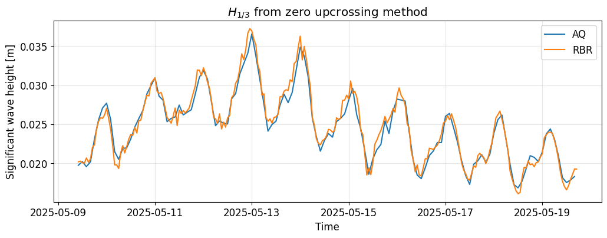

%load_ext autoreload
%autoreload 2
Walkthrough Example - Temporal Analysis#
Hint
Before using the WaveTemporalAnalyzer class, make sure you have the necessary data and dependencies installed. This example assumes you have time series data from an AQUAlogger and a RBR device.
Users are referred to the THIS LINK for a installation guide of the oceanicospy package and its dependencies.
Importing required modules and subpackages#
from datetime import datetime, timedelta
import matplotlib as mpl
import matplotlib.pyplot as plt
import numpy as np
mpl.rcParams["font.size"] = 12
The subpackage temporal will deal with the temporal analysis of the sea surface elevation data. AQUAlogger and RBR class are also imported to load the sensor data.
from oceanicospy.observations.pressure_sensors import AQUAlogger,RBR
from oceanicospy.analysis import temporal
---------------------------------------------------------------------------
ModuleNotFoundError Traceback (most recent call last)
Cell In[3], line 2
1 from oceanicospy.observations.pressure_sensors import AQUAlogger,RBR
----> 2 from oceanicospy.analysis import temporal
File ~/Documents/projects/oceanicospy/oceanicospy/analysis/__init__.py:2
1 from .spectral import WaveSpectralAnalyzer
----> 2 from .temporal import WaveTemporalAnalyzer
File ~/Documents/projects/oceanicospy/oceanicospy/analysis/temporal.py:3
1 import numpy as np
2 import pandas as pd
----> 3 from PyEMD import CEEMDAN,EEMD,EMD
4 from scipy.signal import resample,detrend
6 from ..utils import wave_props
ModuleNotFoundError: No module named 'PyEMD'
Pressure data#
measurement_pressure_sensors_paths = ['../data/observations/AQUAlogger/','../data/observations/RBR/']
sampling_AQ = dict(anchoring_depth=1,sensor_height=0.2,sampling_freq=1,burst_length_s=2048,temperature=False,
start_time=datetime(2025,5,9,10,0,0),end_time=datetime(2025,5,19,18,0,0)-timedelta(seconds=1))
sampling_RBR = dict(anchoring_depth=1,sensor_height=0.2,sampling_freq=2,burst_length_s=7200,
start_time=datetime(2025,5,9,10,0,0),end_time=datetime(2025,5,19,18,0,0)-timedelta(seconds=0.5))
Methods from the observations subpackage are used to load the raw pressure data from the sensors. The data is then cleaned and prepared for the temporal analysis.
sampling_data = [sampling_AQ,sampling_RBR]
metadata_list=['AQ','RBR']
dict_raw_measurements = dict()
dict_clean_measurements = dict()
for idx,measurement_path in enumerate(measurement_pressure_sensors_paths):
if 'AQ' in measurement_path:
object_device = AQUAlogger(measurement_path, sampling_data[idx],filename='AQUAlogger_520PT5.csv')
else:
object_device = RBR(measurement_path,sampling_data[idx])
raw_data = object_device.get_raw_records()
clean_data = object_device.get_clean_records()
dict_raw_measurements[metadata_list[idx]] = raw_data
dict_clean_measurements[metadata_list[idx]] = clean_data
dict_clean_measurements['AQ'].head()
| pressure[bar] | depth[m] | depth_aux[m] | burstId | eta[m] | |
|---|---|---|---|---|---|
| date | |||||
| 2025-05-09 10:00:00 | 1.245722 | 3.136509 | 2.307327 | 1 | 0.052596 |
| 2025-05-09 10:00:01 | 1.244709 | 3.124966 | 2.297273 | 1 | 0.041052 |
| 2025-05-09 10:00:02 | 1.237181 | 3.039040 | 2.222556 | 1 | -0.044874 |
| 2025-05-09 10:00:03 | 1.243695 | 3.113418 | 2.287209 | 1 | 0.029503 |
| 2025-05-09 10:00:04 | 1.253249 | 3.222086 | 2.382034 | 1 | 0.138170 |
dict_clean_measurements['RBR'].head()
| pressure[bar] | depth[m] | burstId | eta[m] | |
|---|---|---|---|---|
| date | ||||
| 2025-05-09 10:00:00.000 | 1.241829 | 2.267149 | 1 | 0.117985 |
| 2025-05-09 10:00:00.500 | 1.239702 | 2.246051 | 1 | 0.096886 |
| 2025-05-09 10:00:01.000 | 1.235314 | 2.202530 | 1 | 0.053365 |
| 2025-05-09 10:00:01.500 | 1.233978 | 2.189276 | 1 | 0.040110 |
| 2025-05-09 10:00:02.000 | 1.234466 | 2.194119 | 1 | 0.044954 |
Using the WaveTemporalAnalyzer class#
First, we need to instanciate the WaveTemporalAnalyzer class, which will allow us to make the temporal analysis for the pressure data. We need to provide the measurement signal and the sampling data as arguments.
WaveTemporalAnalyzer will look for measurement signal with a column named “eta[m]”, which is the standard name for the sea surface elevation in oceanicospy. If the column name is different, it can be specified as an argument when instanciating the class.
help(temporal.WaveTemporalAnalyzer)
Help on class WaveTemporalAnalyzer in module oceanicospy.analysis.temporal:
class WaveTemporalAnalyzer(builtins.object)
| WaveTemporalAnalyzer(measured_signal, sampling_data, surface_level_column='eta[m]')
|
| Methods defined here:
|
| __init__(self, measured_signal, sampling_data, surface_level_column='eta[m]')
| "
| Initializes the analysis object with measurement signal and sampling data.
|
| Parameters
| ----------
| measurement_signal : array-like
| The input signal data to be analyzed.
| sampling_data : dict
| Dictionary containing sampling parameters with the following keys:
| - 'sampling_freq' (float): Sampling frequency of the signal.
| - 'anchoring_depth' (float): Depth at which the sensor is anchored.
| - 'sensor_height' (float): Height of the sensor above the bottom.
| - 'burst_length_s' (float): Duration of each burst in seconds.
| surface_level_column : str, optional
| The name of the column in measurement_signal that contains surface level data (default is 'eta[m]').
|
| Notes
| -----
|
| 23-Feb-2014 : First Matlab version - Daniel Peláez
| 01-Sep-2023 : First Python version - Alejandro Henao
| 10-Dec-2025 : Empirical Mode decomposition - Franklin Ayala
|
| apply_zero_upcrossing_burst(self, burst_signal, sampling_freq, anchoring_depth, sensor_height)
| This function calculates the significant wave height, the period and the wavelength
| with the zero-upcrossing method.
|
| Parameters
| ----------
| burst_signal : array_like
| A series of data without trend.
| sampling_freq : float
| The sampling frequency.
| anchoring_depth : float
| The measurement depth.
| sensor_height : float
| The distance from the bottom to the sensor.
|
| Returns
| -------
| H_top_third : float
| The significant wave height (top third).
| Hmax : float
| The maximum wave height.
| Tmean : float
| The mean period.
| Lmean : float
| The mean wavelength.
|
| compute_params_from_zero_upcrossing(self)
| Calculate wave parameters from zero-crossing analysis of pressure data.
|
|
| Returns
| -------
| pandas.DataFrame
| DataFrame with wave parameters indexed by time, containing columns:
| - 'H1/3': Significant wave height (H1/3).
| - 'Tmean': Mean wave period (Tmean).
|
| decompose_into_IMFs_for_bursts(self, EMD_type, maximum_IMFs, number_ensembles=None, amplitude_noise_std=None, parallel=True, nb_processes=2)
| Decomposes the signal into Intrinsic Mode Functions (IMFs) for each burst using Empirical Mode Decomposition (EMD)
| or its variants.
|
| Parameters
| ----------
| EMD_type : str
| The type of EMD to use. Options are 'EMD', 'EEMD', or 'CEEMDAN'.
| maximum_IMFs : int
| The maximum number of IMFs to compute for each burst.
| number_ensembles : int, optional
| The number of ensembles to use for EEMD or CEEMDAN (required if EMD_type is 'EEMD' or 'CEEMDAN').
| amplitude_noise_std : float, optional
| The standard deviation of the added noise for EEMD or CEEMDAN
| parallel : bool, optional
| Whether to use parallel processing for CEEMDAN (default is True).
| nb_processes : int, optional
| The number of processes to use for parallel processing in CEEMDAN (default is 2).
|
| Returns
| -------
| numpy.ndarray
| A 3D array containing the IMFs for each burst, with shape (number of bursts, maximum_IMFs, burst_length_s).
|
| ----------------------------------------------------------------------
| Data descriptors defined here:
|
| __dict__
| dictionary for instance variables (if defined)
|
| __weakref__
| list of weak references to the object (if defined)
Zero upcrossing method#
wave_params_dfs = dict()
for idx,metadata in enumerate(metadata_list):
TemporalAnalyzer = temporal.WaveTemporalAnalyzer(dict_clean_measurements[metadata],sampling_data[idx])
print(type(TemporalAnalyzer))
wave_params_dfs[metadata_list[idx]] = TemporalAnalyzer.compute_params_from_zero_upcrossing()
<class 'oceanicospy.analysis.temporal.WaveTemporalAnalyzer'>
<class 'oceanicospy.analysis.temporal.WaveTemporalAnalyzer'>
fig,ax = plt.subplots(1,1,figsize=(12,4))
ax.plot(wave_params_dfs['AQ']['H1/3'],label='AQ')
ax.plot(wave_params_dfs['RBR']['H1/3'],label='RBR')
ax.set(ylabel='Significant wave height [m]',xlabel='Time',title='$H_{1/3}$ from zero upcrossing method')
ax.grid(True,alpha=0.3)
ax.legend()
plt.show()

Empirical mode decomposition (EMD) method#
We can also use the EMD method to decompose the sea surface elevation signal into its intrinsic mode functions (IMFs). This can be useful to analyze the different frequency components of the signal.